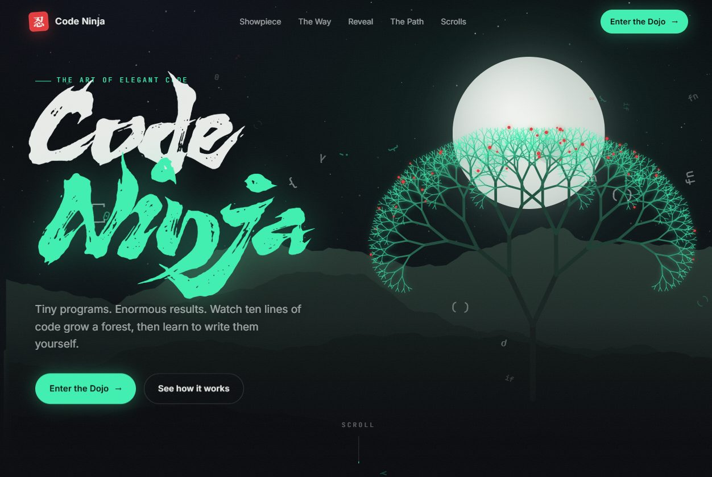

Build Like the Bubble Pops Tomorrow
Every few weeks there’s a new headline asking whether AI is a bubble. Valuations, data centre spending, startups with a chatbot and a pitch deck. It’s a fair question, and I don’t think anyone honestly knows the answer.
But I’ve stopped finding it the most useful question.
Bubbles burst on the hype, not the plumbing
The dot-com crash took out a long list of companies. It didn’t take out the internet. The things that were actually useful (the infrastructure, the boring protocols, the businesses that solved a real problem) carried on and became the foundation for what came next.
If AI is partly a bubble, I’d expect something similar. The flashy wrappers and “AI-powered” labels slapped on everything are the most exposed. The parts that quietly save time or money will stick around.
The question I ask instead
More recently, outside my day role, I’ve been spending more time on data science and AI engineering projects. The question I keep coming back to is: if the hype disappeared tomorrow, which of my skills would still matter?
My answer so far:
- Data that can be trusted. Every model, RAG system and dashboard sits on a pipeline. Grain, freshness, tests, reconciliations. None of that goes out of fashion.
- Evaluation. Being able to say “this works on these cases, fails on those, and here’s how we know” is worth more than any demo. In a downturn, “prove it” becomes the first question.
- Unit economics. What does a model call cost, and what does it save? Plenty of AI features look great until someone divides the bill by the value.
- Plain old checking. My finance background keeps showing up here. Tie the output back to the source. If a number can’t be traced, it can’t be trusted, whether a model or a spreadsheet produced it.
What I’m doing about it
- Building small projects that solve a specific problem, not “AI for everything”.
- Measuring before and after, even roughly.
- Learning the fundamentals underneath the tools (SQL, statistics, testing) rather than only the latest framework.
- Staying curious about the new stuff without betting everything on it.
Why I built Code Ninja
A while back I built a project called Code Ninja as my answer to the “coding is dead” takes doing the rounds.

To be fair, those takes are partly right. Top AI models can now write working code faster than most of us can type it. If the only value you bring is producing lines of code, that’s a hard spot to be in.
But building Code Ninja reminded me why the fundamentals still matter. When the AI hands you something that almost works, you need to know enough to see why it doesn’t. You need to know enough to check it, fix it and trust it in front of real data. The model can write the code. Knowing whether it’s the right code is still on you.
And there’s something no model can do for you: the joy of learning a thing, wiring it into something you built, and watching it actually solve a problem. That click when a concept you studied turns into a working feature is the part of this work I’d never want to outsource.
So if AI is a bubble, I’m not worried about the fundamentals popping with it. If anything, they’re what keep you standing.
The takeaway
Maybe it’s a bubble, maybe it isn’t. Either way, the work that survives is the work that can show its value. A demo impresses a room. A measured result survives a downturn.
Build like the bubble pops tomorrow, and be glad if it doesn’t.